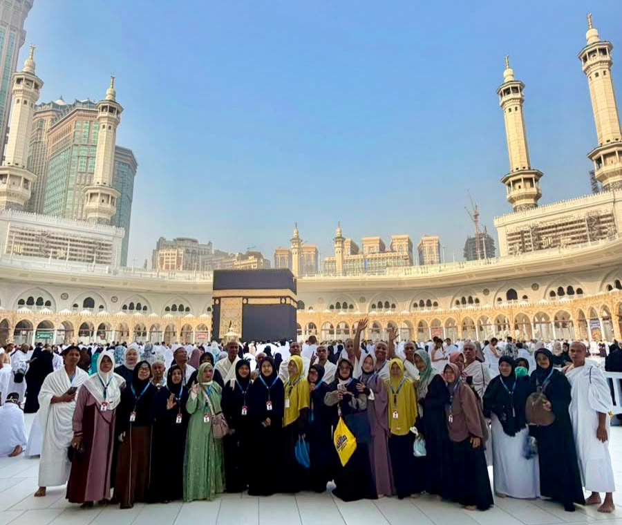
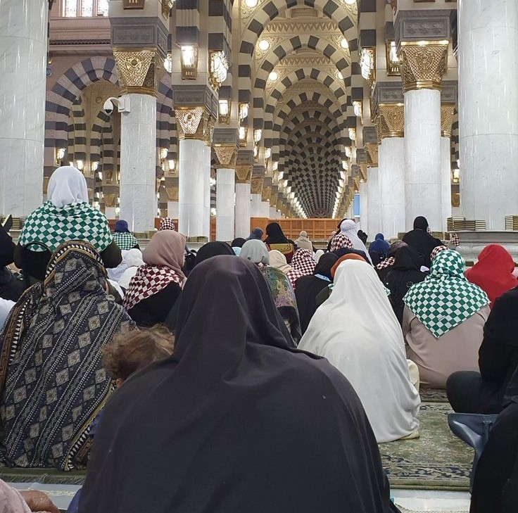
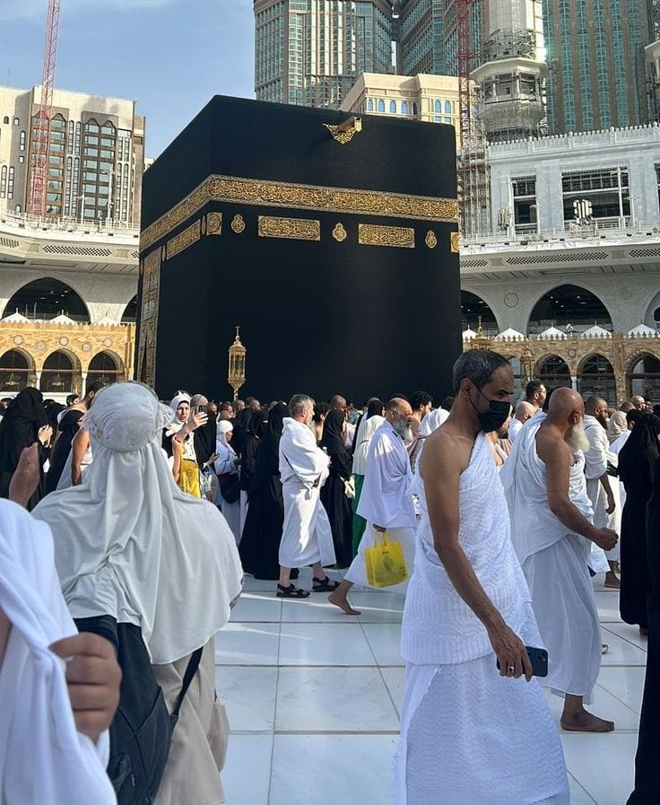

Galeri Kami
Momen berharga di Tanah Suci yang kami abadikan untuk Anda.

Momen pertama kali jamaah melihat Ka'bah — penuh haru dan doa.

Menunaikan salat dan berdoa di tempat yang penuh keberkahan.

Saling mendukung dan menjaga satu sama lain selama perjalanan.

Mengunjungi tempat-tempat bersejarah untuk menambah wawasan spiritual.

Melihat lautan manusia yang berputar mengelilingi Ka'bah.

Mengunjungi masjid pertama yang dibangun dalam sejarah Islam.
Daftarkan diri Anda dan keluarga untuk perjalanan umrah berikutnya.